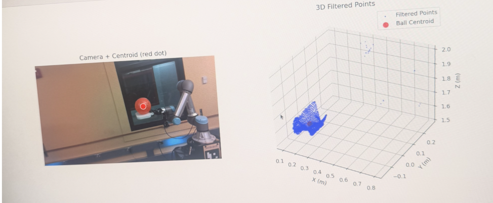

Perception
We used HSV (hue-saturation-value) thresholding to determine the ball pose with low latency and reasonable accuracy.

What is HSV?
HSV breaks every pixel into hue (which color it is, like red versus blue versus green), saturation (how vivid that color is versus how washed-out or grey), and value (how bright it is). Thresholding on those three lets us pick out the red-orange ball without false matches on shadowed or pale surfaces that share the same hue.
The core pipeline
1. Register the camera with ArUco to put base_link and camera_link in the same frame
An ArUco marker is mounted on the UR7e base at a known offset. The aruco node finds it in the RealSense color stream, and the static_camera_tf node chains the detection with the fixed marker-to-base offset to solve for a one-time base_link to camera_link static transform. Every detection downstream then comes out directly in base_link coordinates, so the rest of the pipeline never has to do per-frame transform work between camera and robot frames.
2. Threshold the RealSense RGB-depth point cloud based on tuned HSV values
The RealSense publishes a depth-aligned color point cloud at 30 Hz on /camera/camera/depth/color/points. We pull the packed RGB field off every point, convert it to HSV, and apply a tuned color mask in one vectorized pass. The default bounds (H in [0, 12], S in [120, 255], V in [80, 255]) are tuned for the red-orange ball under the lab lighting. We also subsample the cloud by a stride of 2 before masking, which roughly halves the per-frame point count.
3. Drop outliers within a workspace box and average to compute the centroid
After the HSV mask we AND the surviving points with a fixed workspace bounding box in base_link coordinates (roughly x in [-0.8, 0.8] m, y in [-0.8, 0.8] m, z in [0, 2] m). That throws out anything matching the ball's color but sitting somewhere physically impossible, like wall reflections, the operator's clothes, or light fixtures. If fewer than about 20 points survive both filters we skip the frame entirely. Otherwise we take the mean of the remaining XYZ points as the ball centroid and publish it as /ball_pose for the trajectory predictor and the controller to consume.

Why HSV instead of YOLO
We started with YOLOv8 against the color image, but even with inference capped at 8 Hz it added too much latency for the trajectory predictor to fit a velocity in time. The HSV pass on the cloud is just a NumPy mask, so it adds almost nothing on top of the cloud arriving, and the perception loop ends up bottlenecked by the RealSense's RGB stream itself rather than by our model.